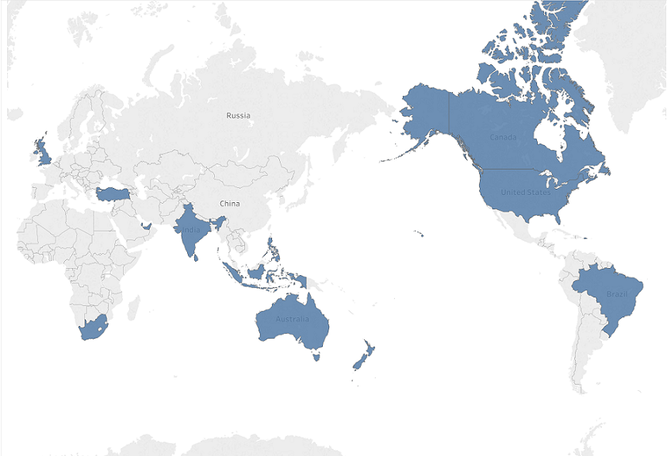

DATASET
The restaurant data was collected from the Zomato API, then taken from Kaggle as a csv file. The dataset is comprised of approxiately 9500 global restaurants from 15 countries. 5 features were chosen for this analysis: Country, City, Cuisine, Rating, and Price.
COUNTRY/CITY
This dataset has 15 countries and 140 cities of interest. The countries are highlighted
below, and the cities will be explored more closely further on It's important to note
that large countries such as China or Russia, or even countries that are strong
at the culinary arts (e.g., Italy, Japan) are not included. This does have an effect
on the conclusions I will try to draw from this project.

CUISINE (TOP 10)
This dataset has 135 different cuisines. Some of the cuisines can be grouped together, such as Southern Indian and Central Indian to just Indian. There are also other cuisine types such as Coffee that can be placed in the Beverages grouping. But there are still too many cuisines to look at all at once, so let's just take a look at the top 10.
RATING/PRICING
The restaurants from this database are given ratings from a range of [0, 5] with increments of 0.1. The Pricing is similarly in a range of values. Each restaurant belongs to a different price range. The prices are categorized between 1-4, with an increment of 1. 4 is of course the most expensive.